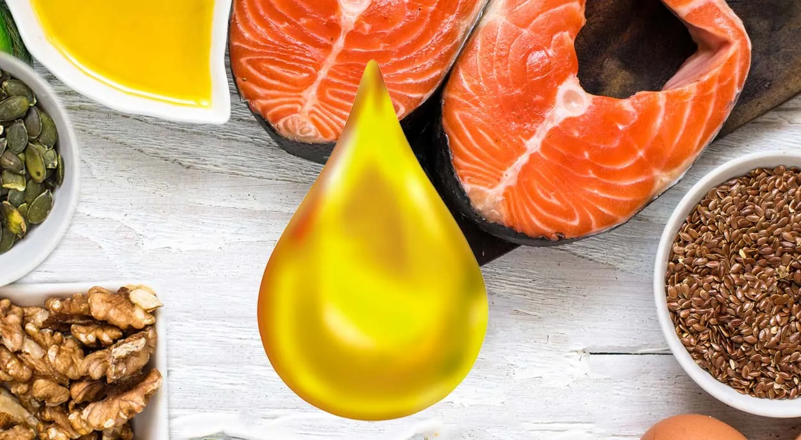

Was du wirklich über essenzielle Omega-3-Fettsäuren wissen solltest

Alle kennen sie, aber fast immer werden sie zu wenig gegessen: Omega-3-Fettsäuren sind nicht einfach nur ein Trend, sondern essenzielle Bestandteile deiner Ernährung, die einen absolut entscheidenden Einfluss auf deinen Körper haben.
Wir haben in unserer Arbeit als unabhängige FitLine Berater über viele Jahre bemerkt, dass ein wesentlicher Nährstoff oft stark unterschätzt und vernachlässigt wird: Omega-3-Fettsäuren. Häufig werden Vitamin D, Magnesium oder ähnliche Nährstoffe eingenommen, fragt man jedoch nach Omega-3, wurde das meist entweder noch nie gezielt verwendet, oder nur sehr stiefmütterlich behandelt. Obwohl Medien seit vielen Jahren über die Wichtigkeit der Fettsäuren informieren, ist die wirkliche Bedeutung beim Großteil der Menschen scheinbar nicht angekommen.
Vielleicht liegt es auch daran, dass viele Menschen denken, dass sie Omega-3 sowieso in ausreichenden Mengen über die tägliche Nahrung aufnehmen. Auch das haben wir oft beobachtet, sogar bei vegan lebenden Menschen. Hier fehlt offensichtlich Wissen.
In diesem Artikel erfährst du alles, was du über essenzielle Omega-3-Fettsäuren wissen solltest, über die verschiedenen Arten, ihre Vorteile für Herz, Gehirn, sowie die besten Quellen und Ergänzungsmöglichkeiten.
Was sind Omega-3-Fettsäuren?
Omega-3-Fettsäuren sind eine Gruppe von mehrfach ungesättigten Fettsäuren, die für den menschlichen Körper unverzichtbar sind.
Es gibt verschiedene Arten von Omega-3-Fettsäuren, darunter ALA (Alpha-Linolensäure), EPA (Eicosapentaensäure) und DHA (Docosahexaensäure). Diese Fettsäuren können vom Körper nicht selbst gebildet werden, weshalb sie über die Nahrung oder Nahrungsergänzungsmittel aufgenommen werden müssen. Darum sind sie essentiell.
Die unterschiedlichen Typen haben jeweils spezifische Funktionen im Körper und tragen zur Aufrechterhaltung zahlreicher Strukturen und Prozesse im Körper bei.
Die verschiedenen Typen von Omega-3
Es gibt verschiedene Arten von Omega-3-Fettsäuren, darunter ALA, EPA und DHA.
ALA (Alpha-Linolensäure) ist die pflanzliche Form dieser Fettsäuren und wird vor allem in Nüssen und Samen gefunden, insbesondere in Leinsamen, Chiasamen und Walnüssen.
EPA (Eicosapentaensäure) und DHA (Docosahexaensäure) hingegen sind die tierischen Formen und in tierischen Lebensmitteln wie marinen Quellen wie Lachs, Sardinen oder Makrele, aber auch in Algen enthalten. Sie werden im menschlichen Körper an vielen Stellen benötigt. DHA ist für den Körper dabei anscheinend bedeutsamer. Beide Formen können jeweils ineinander umgewandelt werden.
Während ALA im Körper in EPA und DHA umgewandelt werden kann, geschieht dies nur in begrenztem Maße. Die aktuelle Wissenschaft geht von ca. 5 % aus.
Daher ist es wichtig, sowohl pflanzliche als auch tierische Quellen von Omega-3 in deine Ernährung zu integrieren, um alle Vorteile dieser wertvollen Fettsäuren zu nutzen. Dies stellt natürlich vegan und vegetarisch lebende Menschen vor Herausforderungen, was aber über gute, vegane Omega-3 Nahrungsergänzung gelöst werden kann.
Warum ist Omega-3 so wichtig für den Körper?
Omega-3-Fettsäuren sind wichtige Bestandteile verschiedener Körperstrukturen und finden sich in zahlreichen Geweben und Organen. Diese essentiellen Fettsäuren werden vom Körper in unterschiedlichen Bereichen eingelagert und sind Teil der natürlichen Körperzusammensetzung.
Um dir die Bedeutung vielleicht anschaulich nahezubringen, hier eine Liste, wo unter anderem überall Omega-3 im Körper vorkommt:
Vorkommen von Omega-3-Fettsäuren im Körper:
- Gehirn und Nervensystem: besonders in den Zellmembranen der Neuronen. Dein Gehirn besteht zu ca. 20 % aus DHA.
- Netzhaut der Augen: als struktureller Bestandteil der Photorezeptoren
- Zellmembranen: in allen Körperzellen als Teil der Phospholipidschicht
- Herz- und Gefäßgewebe: in den Membranen der Herzmuskelzelle und Zellmembranen von Blutgefäßen
- Leber: als Speicher- und Stoffwechselort für Fettsäuren
- Muskelgewebe: eingebaut in die Muskelfasermembranen
- Hormone und andere Botenstoffe: ist beteiligt an Bildung und Regulierung von Hormonen und Neurotransmittern
- Haut: als Bestandteil der Hautbarriere und Zellstrukturen
- Fortpflanzungsorgane: besonders in Spermien und Eierstockgewebe
- Immunzellen: als strukturelle Komponenten verschiedener Abwehrzellen
- Blutplasma: in gebundener Form als Transport- und Speichermedium
- Muttermilch : in der Muttermilch sind neben anderen Fetten auch Omega-3 enthalten
Die Verteilung und Konzentration der Omega-3-Fettsäuren variiert je nach Gewebe und ist abhängig von der individuellen Ernährung und dem Stoffwechsel.
Nun stell dir einmal selbst die Frage: Wenn dein Körper diesen Stoff nicht selbst herstellen kann, ist er also auf die Zufuhr über die Nahrung angewiesen!
Wie viel Omega-3 pro Tag isst du? Und denkst du, dass das ausreichend ist, um deinen Körper an all diesen Stellen optimal zu versorgen?
Das Problem in der heutigen Zeit ist, dass wir generell zu viel andere Fettsäuren aufnehmen, (wie Omega-6) und im Verhältnis zu wenig Omega-3. Dadurch verschiebt sich die Menge von Fettsäuren in unserem Körper ungünstig.
Ein Mangel an Omega-3 kann logischerweise zu einer Vielzahl von Problemen führen, weshalb es wichtig ist, sie regelmäßig in deine Ernährung zu integrieren oder für eine ausreichende Aufnahme zu sorgen!
Die Rolle von Omega-3 in der Schwangerschaft
Wenn man sich klarmacht, an wie vielen Stellen Omega-3 im Körper vorkommt und eingesetzt wird, wird auch deutlich, warum eine ausreichende Zufuhr in der Schwangerschaft so wichtig ist.
Leider bekommen wir immer wieder mit, dass viele Frauen bei ihrer Ernährung in der Schwangerschaft Omega-3-Fettsäuren vergessen. Dies kann viele unterschiedliche Folgen für das Kind haben, sich aber auch auf den Zustand der Mutter nach der Geburt auswirken.
Bekannte Vorteile von Omega-3-Fettsäuren
Omega-3-Fettsäuren gehören vermutlich zu den am meisten und besten erforschten Nährstoffen, die es gibt. Zahlreiche Studien wurden und werden in Bezug auf unterschiedlichste körperliche und gesundheitliche Themen durchgeführt.
Die derzeit zulässigen, gesundheitsbezogenen Aussagen für Produkte / Lebensmittel mit Omega-3-Fettsäuren umfassen die folgenden Health Claims. Dabei ist wichtig zu beachten, dass diese nur für Produkte mit bestimmten Mindestmengen genutzt werden dürfen, und sich positive Wirkungen erst ab einer täglichen Aufnahme von 250 mg DHA bzw. ab 2 / 3 g (für die letzten beiden Aussagen) einstellen:
DHA trägt zur Erhaltung einer normalen Gehirnfunktion bei.
EPA und DHA tragen zu einer normalen Herzfunktion bei.
DHA trägt zur Erhaltung normaler Sehkraft bei.
DHA und EPA tragen zur Aufrechterhaltung eines normalen Blutdrucks bei. (Tägliche Gesamtaufnahme von 5 g EPA/DHA darf nicht überschritten werden).
DHA trägt zur Aufrechterhaltung eines normalen Triglyceridspiegels im Blut bei. (Tägliche Gesamtaufnahme von 5 g EPA/DHA darf nicht überschritten werden).
Die Vorteile von Omega-3-Fettsäuren sind vielfältig und reichen weit über die oben genannten Punkte hinaus. Es wird klar, dass diese Fettsäuren eine Schlüsselrolle in deiner täglichen Ernährung spielen sollten.
Nun widmen wir uns den besten Quellen für Omega-3-Fettsäuren und wie du sie einfach in deinen Alltag integrieren kannst:
Quellen von Omega-3-Fettsäuren
Fettreiche Fische wie Lachs, Sardine und Makrele sind hervorragende Quellen für Omega-3. Diese Fische liefern die wertvollen Fettsäuren EPA und DHA in konzentrierter Form. Diese beiden Formen von Omega-3 sind besonders wichtig, da sie direkt von deinem Körper genutzt werden können, ohne dass eine Umwandlung erforderlich ist.
Wenn du also auf der Suche nach einer effektiven Möglichkeit bist, deine Omega-3-Zufuhr zu steigern, sind Fischgerichte also eine ausgezeichnete Wahl. Es wird empfohlen, mindestens zwei Portionen fettreichen Fisch pro Woche zu konsumieren, um die Vorteile optimal zu nutzen.
Zu beachten ist jedoch dabei, dass der Fisch sehr frisch und von hoher Qualität und Reinheit von Schadstoffen sein muss. Das ist heute nicht immer einfach zu finden. Das Futter, das der Fisch bekommen hat, muss reich an Omega-3 gewesen sein, sonst sind auch die Mengen im Fisch nicht hoch! Denn im natürlichen Umfeld erhält der Fisch seine Omega-3-Fettsäuren aus den Algen, die er frisst.
Wird nun künstliches und Omega-3 armes Futter in einer Fischzucht gegeben, leidet auch der ernährungsphysiologische Wert des Fisches darunter.
Die essentiellen Fettsäuren für Vegetarier und Veganer
Für Vegetarier und Veganer sind Leinsamen, Walnüsse und Chiasamen mögliche Alternativen. Diese pflanzlichen Quellen enthalten ALA, die pflanzliche Form von Omega-3.
Obwohl ALA im Körper in EPA und DHA umgewandelt werden kann, geschieht dies nur in begrenztem Maße. Daher ist es sinnvoll, eine Vielzahl von Quellen in deine Ernährung einzubauen, und Nahrungsergänzungsmittel in Betracht zu ziehen, die Omega-3 aus Algen gewinnen!
Leinsamen können einfach in Smoothies oder Joghurt gemischt werden, während Chiasamen in Pudding oder als Topping für Salate verwendet werden können.
Neben diesen Lebensmitteln gibt es auch spezielle Öle, die reich an Omega-3-Fettsäuren sind bzw. mit DHA versetzt wurden. Leinöl und Algenöl sind hervorragende Optionen, die sich leicht in Dressings integrieren lassen.
Algenöl ist besonders für Menschen geeignet, die auf tierische Produkte verzichten möchten und dennoch nicht auf die Vorteile von EPA und DHA verzichten wollen. Diese Öle bieten eine bequeme Möglichkeit, deine tägliche Zufuhr an Omega-3 zu erhöhen.
Wenn du Schwierigkeiten hast, genügend Omega-3 über deine Ernährung aufzunehmen, könnte die Einnahme von Nahrungsergänzungsmitteln in Betracht gezogen werden. Es gibt viele Produkte auf dem Markt, die hochkonzentrierte Formen von Omega-3-Fettsäuren anbieten. Bei der Auswahl eines Nahrungsergänzungsmittels ist es wichtig, auf Qualität und Reinheit zu achten.
Achte darauf, dass das Produkt aus nachhaltigen Quellen stammt und frei von Schadstoffen ist.
Ideen und Tipps für deine Ernährung
Es sinnvoll, deine Omega-3-Quellen abwechslungsreich zu gestalten, denn eine optimale Ernährung ist immer sehr abwechslungsreich. Indem du verschiedene Quellen kombinierst, stellst du sicher, dass du verschiedene Fettsäuren erhältst und gleichzeitig eine Vielzahl an Nährstoffen in deiner Ernährung integrierst.
Eine der einfachsten Methoden ist es, mindestens zweimal pro Woche fetten, aber frischen und hochwertigen Fisch in deinen Speiseplan aufzunehmen. Lachs, Makrele und Sardinen sind nicht nur köstlich, sondern auch reich an EPA und DHA, den beiden wertvollen Formen von Omega-3.
Wenn du auf der Suche nach einer schnellen und gesunden Mahlzeit bist, probiere eine Lachs-Bowl mit Quinoa und frischem Gemüse. So erhältst du gleich mehrere Nährstoffe auf einmal! Verarbeite den Fisch so wenig wie möglich.
Die Verwendung von speziellen Speiseölen ist besonders empfehlenswert. Leinöl und Walnussöl sind nicht nur geschmacklich ansprechend, sondern auch reich an ALA. Noch besser ist es, wenn du solche Öle kaufst, die zusätzlich mit DHA versetzt sind. Achte auf eine zeitnahe Pressung und dass die Öle nicht bereits lange in warmen Temperaturen gelagert wurden, bevor du sie kaufst.
Du kannst diese Öle z. B. in Dressings für Salate oder zu anderer Rohkost verwenden. Ein einfaches Dressing aus Leinöl, Balsamico-Essig und Senf verleiht deinem Salat einen leckeren Geschmack.
Leinsamen, Chiasamen und Walnüsse sind Optionen, die sich leicht in Joghurt, Quark, Smoothies oder Müsli einarbeiten lassen. Ein einfaches Rezept für ein Frühstück könnte beispielsweise Quark mit Walnüssen und frischen Früchten sein.
Denke daran, dass eine ausgewogene Ernährung der Schlüssel ist. Versuche, verschiedene Quellen von Omega-3-Fettsäuren in deine Mahlzeiten zu integrieren und variiere deine Rezepte.
Das Problem mit der Oxidation und Qualität von Omega-3-Fettsäuren
Du solltest beachten, dass Omega-3-Fettsäuren sehr empfindliche Fette sind, die unter Einfluss von Sauerstoff und Wärme schnell oxidieren. D. h. sie werden ranzig und bilden dabei freie Radikale, die für unseren Körper nicht mehr förderlich sind.
Dies ist ein bekanntes Problem bei Omega-3-Fettsäuren, das nicht nur Fisch (den wir lange lagern, kochen, braten etc.) betrifft, sondern auch pflanzliche Öl, die in vielleicht in einem Verkaufsregal, oder auch Nahrungsergänzungsmittel betrifft.
Die Hersteller versuchen, diesen Oxidationsprozessen mit natürlichen Antioxidantien entgegenzuwirken. Ich persönlich nutze dennoch nur Produkte, bei denen ich weiß, dass sie entweder komplett frisch gepresst (bei Öl), oder bis zum Versand gekühlt gelagert sind. Dabei habe ich einfach das beste Gefühl!
Omega-3 als Nahrungsergänzungsmittel – Möglichkeiten und Einschätzung des Nutzen
In der heutigen schnelllebigen Welt ist es oft eine Herausforderung, alle notwendigen Nährstoffe über die Ernährung allein aufzunehmen.
Besonders aus oben genannten Gründen kann die Ergänzung von Omega-3-Fettsäuren eine sinnvolle Option sein, um sicherzustellen, dass du ausreichend versorgt bist.
Besonders für Menschen, die wenig oder keinen hochwertigen Fisch konsumieren oder spezielle diätetische Einschränkungen haben, können Nahrungsergänzungsmittel eine wertvolle Unterstützung bieten.
Auch während der Schwangerschaft und Stillzeit kann eine ausreichende Versorgung mit Omega-3 wichtig für das Baby sein!
Worauf sollte man beim Kauf achten?
Die Qualität und Reinheit der Omega-3-Präparate sind entscheidend für deren Nutzen. Achte beim Kauf darauf, dass das Produkt aus hochwertigen Quellen stammt und keine schädlichen Verunreinigungen wie Schwermetalle oder Pestizide enthält.
Es gibt viele Produkte auf dem Markt, die hochkonzentrierte Formen von Omega-3-Fettsäuren anbieten. Informiere dich über die Inhaltsstoffe und bevorzuge Produkte, die aus nachhaltigen Fischbeständen oder pflanzlichen Quellen wie Algenöl hergestellt werden.
Omega-3 aus Algenöl ist besonders geeignet für Menschen, die tierische Produkte meiden möchten und dennoch nicht auf die Vorteile von DHA und EPA verzichten wollen.
Wie bereits erwähnt, solltest du auf eine gekühlte Lagerung achten. Nutze also besser keine Produkte, die eventuell über Monate in irgendwelchen ungekühlten Lagern oder Verkaufsregalen verbringen, sonst könnte es sein, dass du dir nichts Gutes tust!
Warum Kapseln meist nicht empfehlenswert sind
Günstige Kapseln aus der Drogerie oder dem Supermarkt erfüllen unserer Erfahrung nach nicht die Kriterien für ein gutes Produkt. Es gibt Gründe, warum Öle von namhaften Herstellern alle einen höheren Preis haben. Das solltest du dir selbst Wert sein!
Außerdem wird ein weiteres Problem bei Kapseln häufig übersehen:
Fette müssen verdaut werden, und die Fettverdauung beginnt bereits im Mund durch den Speichel! Wenn du Öl in Kapseln schluckst, und diese sich im Magen öffnen, übergehst du die wichtige Vorverdauung im Mund.
Kein Wunder also, dass wir immer wieder hören, wie Nutzer von Kapseln von Problemen mit dem Magen, Aufstoßen und Übelkeit sprechen! Ich denke, dass du dir damit keinen Gefallen tust, denn das Öl kann deinem Körper nur nützen, wenn es auch richtig verdaut wurde…
Wasserlösliche Omega-3-Fettsäuren
Wir bieten dir als unabhängige Vertriebspartner der PM-International / FitLine Produkte einige Nahrungsergänzungsmittel an, die Omega-3-Fettsäuren liefern und einfach in den Alltag integriert werden können:
Das Produkt Omega-3 vegan, oder ein Mischprodukt inkl. des sehr gern kombinierten Q10: unser Heart-Duo¹. Auch im Nahrungsergänzungsmittel Generation 50+ ist Omega-3 enthalten, diesmal in Pulverform, jedoch ebenfalls wasserlöslich zu trinken in einer leckeren Mischung mit vielen anderen wichtigen Nährstoffen.
Die Kombination aus hochwertigen, veganen Zutaten mit einzigartigen, patentierten Technologien machen diese Produkte weltweit zu einer besonderen Ausnahme im Bereich der Omega-3-Nahrungsergänzung!
Die wasserlösliche Form sorgt z. B. dafür, dass die wertvollen Inhaltsstoffe bestmöglich in deinem Körper aufgenommen werden: der Schritt der Verdauung fällt weg, bei dem dein Körper die Fettsäuren erst aufspalten muss. Das Produkt wird dann als Tropfen in einem Getränk eingenommen und getrunken.
Das eignet sich auch besonders gut für Kinder, die keine Kapseln schlucken können, oder keine Speiseöle verzehren wollen!
Um sicherzustellen, dass du das Beste aus deiner Ernährung und Nahrungsergänzung herausholst, bieten wir kostenlose Beratung an. So kannst du sicherstellen, dass du die richtigen Produkte für deine individuellen Bedürfnisse auswählst und optimal von den Vorteilen der Omega-3-Fettsäuren profitierst.
Empfohlene Dosierung und Anwendung
Die empfohlene Tagesdosis von Omega-3 variiert je nach Alter und Gesundheitszustand. Um die Vorteile dieser wertvollen Fettsäuren optimal zu nutzen, ist es wichtig, die richtige Menge zu konsumieren. Diese ist natürlich auch wieder von der Qualität des jeweiligen Produktes abhängig, was es letztlich etwas schwer macht…
Allgemein wird empfohlen, dass Erwachsene mindestens 250 bis 500 mg EPA und DHA pro Tag zu sich nehmen.
Für Menschen mit speziellen gesundheitlichen Bedürfnissen oder höheren Anforderungen, wie Schwangere oder stillende Frauen, kann eine höhere Dosierung erforderlich sein.
Es ist wichtig, die Aufnahme von Omega-3-Fettsäuren in deinem Alltag in eine Routine zu bringen. Dies kann durch tägliche Einnahme von Nahrungsergänzungsmitteln geschehen oder durch das bewusste Einplanen von Mahlzeiten mit reichlich Omega-3-haltigen Lebensmitteln.
Eine praktische Möglichkeit ist z. B. die Kombination von Ölen mit einer Mahlzeit. Ein einfaches Beispiel wäre, einen Löffel mit DHA versetztes Leinöl in deinen Salat, Joghurt oder Quark zu mischen. Wichtig ist, dass Omega-3 nie erhitzt werden sollte.
Wasserlösliche Produkte wie unsere Omega-3 Nahrungsergänzungsmittel werden unabhängig vom Essen eingenommen und in Wasser aufgelöst getrunken.
Omega-3 kann zu jeder Tageszeit eingenommen werden, jedoch kann die Einnahme abends besonders sinnvoll sein.
Die häufigsten Fehler, die in Zusammenhang mit Omega-3 gemacht werden
Zu guter Letzt haben wir dir noch eine Liste zusammengestellt mit den häufigsten Fehlern, die unserer Erfahrung nach in Zusammenhang mit der Aufnahme von Omega-3 und der Verwendung von Nahrungsergänzungsmitteln gemacht werden:
- Gar kein Omega-3 bzw. viel zu wenig essen oder über Nahrungsergänzungsmittel zuführen. Das ist der fatalste Fehler überhaupt. ;-)
- Die Aufnahme oder Einnahme nur sehr lückenhaft zu gestalten. Häufig kommt eine Aussage wie: „Ich habe da was zu Hause, aber schon länger nicht mehr eingenommen“.
- Nahrungsergänzungsmittel in Kapselform zu nutzen: die Vorverdauung des Fettes im Mund fehlt und führt zu Problemen wie Aufstoßen und Übelkeit, oder zu einer schlechten Verwertung. Meist liegt hier auch keine Kühlung vor.
- Produkte zu verwenden, die nicht ausreichend vor Oxidation geschützt sind (Öle, Kapseln, Nahrungsergänzung…). Sauerstoff, Wärme und Bewegung beschleunigt Oxidationsprozesse der empfindlichen Fettsäuren, was die Qualität des Produktes reduziert. Ich kaufe daher nur gekühlt gelagerte bzw. frisch gepresste Öle / Produkte.
- Bei Lagerung zu Hause auf einen unzureichenden Oxidationsschutz und keinen schnellen Verbrauch zu achten: Sauerstoff, Wärme und Bewegung beschleunigt Oxidationsprozesse der empfindlichen Fettsäuren, was die Qualität des Produktes reduziert. Omega-3 gehört in den Kühlschrank, auch ungeöffnet (wir sind dieser Überzeugung, auch wenn manche Hersteller dies abstreiten). Dann aber nicht in die Tür, die du 20x mal am Tag auf und zu machst (Bewegung). Je nach Zusammenstellung kann es sein, dass das Produkt nur wenige Wochen haltbar ist und daher zügig verbraucht werden muss.
- Hochverarbeitete Nahrungsmittel mit Omega-3-Angaben zu essen, wie z. B. Margarine. Omega-3 ist so empfindlich, dass wir nicht glauben, dass die Fettsäuren nach einem derart starken Verarbeitungsprozess wie bei der Margarinenherstellung noch gut für den Körper sind. Schalte deinen Kopf ein.
- Rein auf pflanzliche, vegane Quellen zu setzen (meist noch in geringen Mengen) wie täglich ein paar Walnüsse, und sich dabei gut versorgt zu glauben. Der Klassiker ist auch das gewöhnliche Leinöl, welches dann noch monatelang ungekühlt in einem Verkaufsregal stand. Besonders häufig natürlich bei Vegetariern oder Veganern der Fall.
- Fisch als gute Quelle zu glauben, wenn dieser aus minderwertiger, hochindustrieller Zucht stammt und ggf. noch mit Schadstoffen belastet ist. Wenn du diesen dann noch brätst oder anderweitig stark verarbeitest, stellen wir infrage, wie viel gute Omega-3-Fettsäuren dann noch in deinem Körper landen.
- Die Einnahme von hochwertigen Nahrungsergänzungsmitteln nach kurzer Zeit aufzuhören, weil keine Veränderungen gefühlt werden. Omega-3-Fettsäuren sind keine Stoffe, die von heute auf morgen irgendwelche schnellen Resultate bringen. Omega-3 ist ein Faktor, der sich über die Zeit und über viele Jahre bemerkbar macht. Wie möchtest du im Alter leben und in welchem Zustand willst du dann sein?
- Kindern nicht gezielt Omega-3 zu geben, in welcher Art und Form auch immer. Kinder profitieren enorm von einer optimalen Omega-3 Versorgung bzw. leiden stark unter Mängeln. Es ist deine Pflicht als Elternteil, für eine gute Aufnahme zu sorgen, und es ist auch nicht die Entscheidung deines Kindes, ob es das haben will, oder nicht, weil es dazu kein Wissen hat.
- Zu glauben, Omega-3 hat nur etwas mit Herz⁴ und Gehirn2 zu tun und ist nur für ältere oder vegan lebende Menschen wichtig.
¹Thiamin trägt zur normalen Funktion des Herzens bei. 2DHA trägt ab 250 mg pro Tag zur Erhaltung einer normalen Gehirnfunktion bei. ⁴EPA und DHA tragen ab 250 mg pro Tag zu einer normalen Herzfunktion bei.
Häufige Fragen zu Omega-3-Fettsäuren
Das beste Omega-3-Präparat hängt von deinen individuellen Bedürfnissen ab. Achte darauf, dass es hochwertige Quellen wie Fischöl oder Algenöl enthält und eine hohe Konzentration an EPA und DHA bietet, oder, eine besondere Aufnahmeform, wie wasserlösliche Varianten. Dazu ist wichtig, dass das Produkt gekühlt gelagert wird, bevor es verkauft wird. Produkte, die auch auf Reinheit und Nachhaltigkeit getestet wurden, sind ebenfalls empfehlenswert.
Die Kosten für ein Blutbild mit Omega-3-Test können variieren, liegen jedoch in der Regel zwischen 50 und 150 Euro, abhängig von der Klinik oder dem Labor. Es ist ratsam, sich bei deinem Arzt oder in einem spezialisierten Labor nach den genauen Preisen zu erkundigen.
Ja, es wird empfohlen, täglich Omega-3-Fettsäuren einzunehmen, um die Vorteile für den Körper voll auszuschöpfen. Denk daran, dass der Körper Omega-3 nicht selbst bilden kann, also regelmäßig über die Nahrung zugeführt werden muss. Viele Kunden nutzen ihre Omega-3 Präparate nur sporadisch, das ist nicht sehr sinnvoll.
Omega-3 kann zu jeder Tageszeit eingenommen werden, jedoch kann die Einnahme abends besonders sinnvoll sein. Wenn du Öl oder Kapseln nutzt, das erst noch von Verdauungsenzymen aufgespalten werden muss, kann es sinnvoll sein, das Präparat zusammen mit einer Mahlzeit einzunehmen. Dies kann helfen, die Aufnahme der Fettsäuren zu verbessern. Wasserlösliche Produkte wie unsere Omega-3 Nahrungsergänzung werden unabhängig vom Essen eingenommen.